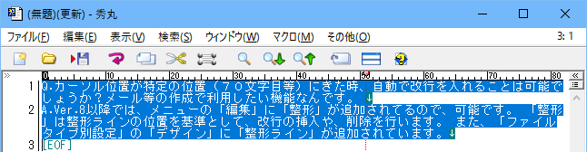

- カーソル位置が特定の位置（７０文字目等）にきた時、自動で改行を入れることは可能でしょうか？メール等の作成で利用したい機能なんです。

Ver.8以降では、メニューの「編集」に「整形」が追加されてるので、可能です。 「整形」は整形ラインの位置を基準として、改行の挿入や、削除を行います。 また、「ファイルタイプ別設定」の「デザイン」に「整形ライン」が追加されています。

整形
行が整形ラインを超えている場合、整形ラインの桁数に改行を入れます。(緑色の縦線が整形ライン)
連結
整形ラインの位置以降に改行がある場合、改行を削除して次の行と連結します。
折り返しに改行を入れてコピー
折り返し部分に、改行を入れてコピーします。